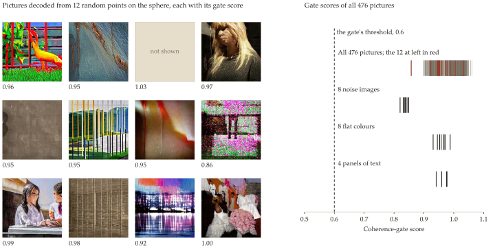

Appendix: what we tested and settled
This appendix holds the tables and figures behind the main pages, grouped by the question each answers. Unless another run is named, counts come from the 15 runs that start at 5 works painted before 1900 (5 starts, 3 loops, 1,920 pictures a run). A cell with 3 numbers reads the search / the random-score loop / the no-step loop.
Three tables the rest refers to
| Group | Pictures | Far and faithful | Far, not faithful | Near, faithful | Near, not faithful |
|---|---|---|---|---|---|
| Works before 1900, repainted from their own vectors | 1,000 | 2 | 1 | 988 | 9 |
| Works from 1900 to 1969, repainted | 512 | 26 | 2 | 474 | 10 |
| Works from 1970 on, repainted | 663 | 94 | 18 | 520 | 31 |
| Random requests inside the cone of the works before 1900 | 192 | 0 | 0 | 0 | 192 |
| Random requests anywhere on the sphere | 64 | 0 | 15 | 0 | 49 |
| Requests read from noise images | 160 | 32 | 7 | 96 | 25 |
| The free search, three runs, pictures | 5,760 | 0 | 4,094 | 79 | 1,587 |
| The search, pictures | 9,600 | 4,380 | 93 | 4,972 | 155 |
| The random-score loop, pictures | 9,600 | 1,534 | 20 | 7,992 | 54 |
| The no-step loop, pictures | 9,600 | 2,708 | 2 | 6,889 | 1 |
| Count | The search | Random-score loop | No-step loop |
|---|---|---|---|
| All pictures | 9,600 | 9,600 | 9,600 |
| Faithful pictures | 9,352 | 9,526 | 9,597 |
| Pictures not feasible (the loop’s reading) | 245 | 72 | 3 |
| Not feasible and far pictures | 92 | 19 | 2 |
| Far pictures | 4,473 | 1,554 | 2,710 |
| Far and faithful pictures | 4,380 | 1,534 | 2,708 |
| Far pictures that pass the 0.575 minimum-gap rule alone | 1,081 | 581 | 297 |
| Admitted (every one faithful) | 142 | 74 | 47 |
| Hits (admitted pictures that are far, faithful and covered by later works) | 120 | 65 | 40 |
| Hits that sit as near a real work as a repainted work does | 64 | 35 | 18 |
| Of those, the ones that pass the decoder’s safety filter | 47 | 30 | 14 |
| Start work | Admitted | Far pictures, of 1,920 | Hits’ lean along the shift, search minus each control |
|---|---|---|---|
| Jan Cossiers, 1641 | 30 / 21 / 14 | 708 / 319 / 547 | +0.053 / +0.081 |
| Fra Angelico, 1419 | 41 / 21 / 8 | 907 / 391 / 666 | +0.006 / +0.055 |
| Alfred Sisley, 1885 | 36 / 12 / 5 | 901 / 305 / 214 | +0.044 / +0.022 |
| Vincent van Gogh, 1890 | 24 / 9 / 10 | 843 / 149 / 1,010 | -0.004 / +0.003 |
| Edgar Degas, 1890 | 11 / 11 / 10 | 1,114 / 390 / 273 | +0.067 / +0.073 |
Far, and whether later art went there
Did later art go where earlier art was sparse?
| Works | AUC, DINOv3 | AUC, SigLIP | Beyond the bar, DINOv3 | Far in both observers |
|---|---|---|---|---|
| All later works | 0.901 | 0.904 | 26.8% (SigLIP 26.5%) | |
| 1900 to 1959 | 0.846 | 0.854 | 11.2% | 1,651 of 35,874 |
| From 1960 on | 0.959 | 0.956 | 43.5% | 9,530 of 33,594 |
| Other media | 0.979 | 0.981 | ||
| Held-out works before 1900 | 1.0% | 71 of 24,627 |
Does it hold through the decoder?
| Repainted works | Far and faithful, 1900 to 1969 | Far and faithful, before 1900 |
|---|---|---|
| All | 26 of 512 | 2 of 1,000 |
| With the reference’s artists removed | 26 of 405 | 0 of 161 |
| Trip | Median year of the 10 nearest real works | Median lean |
|---|---|---|
| 0 | 1856 | -0.01 |
| 1 | 1856 | -0.01 |
| 2 | 1851 | -0.01 |
| 3 | 1857 | 0.01 |
| 4 | 1870 | 0.02 |
| 5 | 1878 | 0.04 |
| 6 | 1905 | 0.10 |
Which distance, and how many neighbours?
| Score | AUC, DINOv3 | AUC, SigLIP |
|---|---|---|
| Mean chord to the 15 nearest (5, 10 and 30 within 0.003 of it) | 0.901 | 0.904 |
| Distance to the centre | 0.864 | 0.849 |
| Leftover outside 32 directions (loners give the same AUC by construction) | 0.826 | 0.879 |
| Outside 32 regions | 0.743 | 0.853 |
| Local ratio | 0.742 | 0.783 |
| Kind of far | Later works that pass, of 512 | Earlier works that pass, of 1,000 | AUC |
|---|---|---|---|
| The score | 28 (26 faithful) | 3 (2 faithful) | 0.85 |
| A bar scaled to the neighbourhood | 4 far and faithful | 1 far and faithful | 0.74 |
| The leftover | 5 | 0 | 0.79 |
A search scored by the leftover
| Count | The leftover search | The search | Random-score loop | No-step loop |
|---|---|---|---|---|
| Picked, Jan Cossiers, 1641 | 59 | 59 | 18 | 5 |
| Picked, Fra Angelico, 1419 | 220 | 138 | 11 | 1 |
| Picked, Alfred Sisley, 1885 | 48 | 35 | 14 | 3 |
| Picked, Vincent van Gogh, 1890 | 331 | 30 | 3 | 4 |
| Picked, Edgar Degas, 1890 | 21 | 28 | 18 | 9 |
| Picked, all 5 starts | 679 | 290 | 64 | 22 |
| Pictures with a large leftover share, of 9,600 | 3,955 | 1,750 | ||
| Far pictures, of 9,600 | 5,995 | 4,473 |
Where do the far later works sit?
| Share of the region the past holds | Far later works, DINOv3 | Far later works, SigLIP |
|---|---|---|
| Under 1 percent | 12,607 of 18,626 | 15,223 of 18,392 |
| Half or more | 58 | 107 |
Why 2 observers, and the smaller of the two?
| Count | DINOv3 | SigLIP |
|---|---|---|
| Held-out works before 1900 far in the observer by itself | 247 | 247 |
| Repainted works before 1900 far in the observer by itself, of 1,000 (the 3 far in both included) | 9 | 12 |
| Repainted works before 1900 far in this observer only | 6 | 9 |
Faithful, and what a bar says
Why check faithfulness at all?
| Count | The search | Random-score loop | No-step loop |
|---|---|---|---|
| Pictures the faithful condition made not feasible | 245 | 72 | 3 |
| Far pictures the condition removed | 92 | 19 | 2 |
| Of those, covered | 85 | 19 | 2 |
| Of those, covered and also near a real work | 66 | 16 | 2 |
| Hits, in the runs | 120 | 65 | 40 |
| Hits, replayed without the faithful condition in the admission step | 112 | 64 | 40 |
| Pictures that enter the admitted pictures in the replay | 18 | 3 | 0 |
| Pictures that leave them in the replay | 17 | 3 | 0 |
| Admitted in the replay (the runs gave 142) | 143 | ||
| Share of hits near art and past the filter, in the replay (the runs gave 0.392) | 0.393 |
Can a model say whether a picture looks like a picture?

What can fidelity not say?
| Group | Median fidelity |
|---|---|
| The no-step loop | 0.359 |
| Today’s reference, repainted works before 1900 (593) | 0.526 |
| Today’s reference, repainted works from 1900 to 1969 (792) | 0.539 |
| The random-score loop | 0.558 |
| Today’s reference, repainted works from 1970 on (663) | 0.581 |
| The search | 0.589 |
| Requests read from noise images | 0.700 |
| Random requests inside the cone | 0.885 |
| Random requests on the sphere | 1.378 |
Each check, on requests whose origin we know
| Check | Repainted real works | Random requests | Random requests inside the cone | Requests read from noise images |
|---|---|---|---|---|
| Faithful, passes | 3,463 of 3,560 | 0 of 256 | 0 of 192 | 128 of 160 |
| Near a real work, passes | 189 of 192 | 153 of 160 | ||
| Nearness to a real work, DINOv3 median | 0.583 | 0.593 |
What does a bar say, and why a bar?
| Bar | DINOv3 | SigLIP | Of 2,048 reference pictures, pass both |
|---|---|---|---|
| The bar of Q7 | 0.9614 | 0.9001 | 5 |
| A bar from today’s reference | 1.0449 | 0.9577 | 0 |
The coherence gate
| Group | Gate score, median |
|---|---|
| Real works | 1.014 |
| Pictures painted from noise | 0.913 |
| The search | 0.924 |
| The random-score loop | 0.968 |
| The no-step loop | 0.963 |
| A pure noise image (a range, not a median) | 0.8203 to 0.8488 |
What the search and its controls did
What does the real score do with no step?
| Count, type of graphics card and loop | Jan Cossiers, 1641 | Fra Angelico, 1419 | Alfred Sisley, 1885 | Vincent van Gogh, 1890 | Edgar Degas, 1890 | All 5 starts |
|---|---|---|---|---|---|---|
| Admitted, another type of card: the no-step loop told the real score | 22 | 47 | 28 | 33 | 16 | 146 |
| Admitted, another type of card: the no-step loop | 17 | 8 | 7 | 12 | 10 | 54 |
| Far pictures, another type of card: the no-step loop told the real score | 1,492 | 1,313 | 685 | 1,126 | 822 | 5,438 |
| Far pictures, another type of card: the no-step loop | 1,062 | 602 | 155 | 147 | 268 | 2,234 |
| Admitted, the search’s type of card: the no-step loop told the real score | 34 | 22 | 22 | 23 | 16 | 117 |
| Admitted, the search’s type of card: the no-step loop | 14 | 8 | 5 | 10 | 10 | 47 |
| Admitted, the search’s type of card: the search | 30 | 41 | 36 | 24 | 11 | 142 |
| Far pictures, the search’s type of card: the no-step loop told the real score | 1,000 | 530 | 745 | 1,333 | 722 | 4,330 |
| Far pictures, the search’s type of card: the no-step loop | 547 | 666 | 214 | 1,010 | 273 | 2,710 |
| Far pictures, the search’s type of card: the search | 708 | 907 | 901 | 843 | 1,114 | 4,473 |
Why does the restart use 4 pictures?
| Count and number of pictures the restart uses | Jan Cossiers, 1641 | Fra Angelico, 1419 | Alfred Sisley, 1885 | Vincent van Gogh, 1890 | Edgar Degas, 1890 | All 5 starts |
|---|---|---|---|---|---|---|
| Admitted, restart from 1 | 57 | 101 | 103 | 90 | 74 | 425 |
| Admitted, restart from 4 (the search) | 30 | 41 | 36 | 24 | 11 | 142 |
| Admitted, restart from 16 | 22 | 18 | 8 | 10 | 6 | 64 |
| Admitted, restart from 32 | 7 | 11 | 8 | 11 | 6 | 43 |
| Far pictures, restart from 1 | 969 | 1,108 | 1,083 | 1,044 | 857 | 5,061 |
| Far pictures, restart from 4 (the search) | 708 | 907 | 901 | 843 | 1,114 | 4,473 |
| Far pictures, restart from 16 | 674 | 1,257 | 698 | 1,112 | 278 | 4,019 |
| Far pictures, restart from 32 | 80 | 578 | 116 | 228 | 123 | 1,125 |
| Hits, read again, restart from 1 | 37 | 65 | 58 | 63 | 60 | 283 |
| Hits, restart from 4 (the search) | 23 | 27 | 35 | 24 | 11 | 120 |
| Far and faithful, read again, restart from 1 | 4,367 | |||||
| Far and faithful, restart from 4 (the search) | 4,380 | |||||
| Far and faithful and off the manifold, read again, restart from 1 | 1,004 | |||||
| Far and faithful and off the manifold, restart from 4 (the search) | 331 |
A single walk with selection
| Count and procedure | Jan Cossiers, 1641 | Fra Angelico, 1419 | Alfred Sisley, 1885 | Vincent van Gogh, 1890 | Edgar Degas, 1890 | All 5 starts |
|---|---|---|---|---|---|---|
| Admitted: the search | 30 | 41 | 36 | 24 | 11 | 142 |
| Admitted: the single walk | 35 | 25 | 55 | 23 | 49 | 187 |
| Far and faithful: the search | 679 | 864 | 896 | 840 | 1,101 | 4,380 |
| Far and faithful: the single walk | 442 | 341 | 527 | 108 | 1,028 | 2,446 |
| With a work dated 1900 or later within the manifold line and none dated before 1900: the search | 601 | 599 | 728 | 828 | 1,094 | 3,850 |
| With a work dated 1900 or later within the manifold line and none dated before 1900: the single walk | 418 | 323 | 396 | 81 | 847 | 2,065 |
| Of those, with a large leftover share: the search | 124 | 206 | 176 | 276 | 532 | 1,314 |
| Of those, with a large leftover share: the single walk | 47 | 120 | 22 | 8 | 215 | 412 |
| Off the manifold: the search | 60 | 227 | 43 | 1 | 0 | 331 |
| Off the manifold: the single walk | 10 | 13 | 100 | 23 | 131 | 277 |
Does the search reach more pictures that lie apart?
| Count and procedure | Jan Cossiers, 1641 | Fra Angelico, 1419 | Alfred Sisley, 1885 | Vincent van Gogh, 1890 | Edgar Degas, 1890 | All 5 starts |
|---|---|---|---|---|---|---|
| Pictures of the case that lie apart: the search | 43 | 65 | 28 | 28 | 23 | 187 |
| Pictures of the case that lie apart: the single walk | 16 | 25 | 12 | 7 | 157 | 217 |
| Pictures of the case that lie apart: the random-score loop | 11 | 8 | 10 | 2 | 5 | 36 |
| Pictures of the case that lie apart: the no-step loop | 3 | 1 | 0 | 3 | 3 | 10 |
| Far and faithful pictures off the manifold that lie apart: the search | 45 | 105 | 23 | 1 | 0 | 174 |
| Far and faithful pictures off the manifold that lie apart: the single walk | 8 | 10 | 65 | 18 | 104 | 205 |
| Far and faithful pictures off the manifold that lie apart: the random-score loop | 89 | |||||
| Far and faithful pictures off the manifold that lie apart: the no-step loop | 49 |
The 3 loops compared without a bar
| Share of pictures beyond the reference’s own percentile, in both observers | 50th | 90th | 99th | 99.9th |
|---|---|---|---|---|
| The search | 0.962 | 0.917 | 0.466 | 0.028 |
| The random-score loop | 0.951 | 0.895 | 0.162 | 0.0006 |
| The no-step loop | 0.953 | 0.856 | 0.282 | 0.0007 |
What counted as a hit, and how many hits are near art
| Loop and start work | Hits | Near art | Past filter | Both |
|---|---|---|---|---|
| The search: Jan Cossiers, 1641 | 23 | 15 | 21 | 13 |
| The search: Fra Angelico, 1419 | 27 | 9 | 24 | 7 |
| The search: Alfred Sisley, 1885 | 35 | 13 | 30 | 8 |
| The search: Vincent van Gogh, 1890 | 24 | 18 | 19 | 14 |
| The search: Edgar Degas, 1890 | 11 | 9 | 7 | 5 |
| The search: All 5 starts | 120 | 64 | 101 | 47 |
| Random-score loop: Jan Cossiers, 1641 | 19 | 8 | 16 | 6 |
| Random-score loop: Fra Angelico, 1419 | 18 | 13 | 13 | 10 |
| Random-score loop: Alfred Sisley, 1885 | 12 | 5 | 11 | 5 |
| Random-score loop: Vincent van Gogh, 1890 | 9 | 7 | 9 | 7 |
| Random-score loop: Edgar Degas, 1890 | 7 | 2 | 5 | 2 |
| Random-score loop: All 5 starts | 65 | 35 | 54 | 30 |
| No-step loop: Jan Cossiers, 1641 | 13 | 8 | 12 | 7 |
| No-step loop: Fra Angelico, 1419 | 6 | 2 | 6 | 2 |
| No-step loop: Alfred Sisley, 1885 | 4 | 1 | 4 | 1 |
| No-step loop: Vincent van Gogh, 1890 | 10 | 6 | 8 | 4 |
| No-step loop: Edgar Degas, 1890 | 7 | 1 | 3 | 0 |
| No-step loop: All 5 starts | 40 | 18 | 33 | 14 |
The blind rating

Do the loops lean along the shift of Q3?
| Start work | The search | Random-score loop | No-step loop |
|---|---|---|---|
| Jan Cossiers, 1641 | +0.25 | +0.20 | +0.17 |
| Fra Angelico, 1419 | +0.25 | +0.24 | +0.19 |
| Alfred Sisley, 1885 | +0.23 | +0.18 | +0.20 |
| Vincent van Gogh, 1890 | +0.22 | +0.23 | +0.22 |
| Edgar Degas, 1890 | +0.26 | +0.20 | +0.19 |
| Run | The free search | Its run told random scores |
|---|---|---|
| 1 | 0.16 | 0.07 |
| 2 | 0.15 | 0.09 |
| 3 | 0.12 | 0.07 |
Are the far pictures far from all art, or only from art before 1900?
| Far and faithful pictures, against today’s reference | The search | Random-score loop | No-step loop |
|---|---|---|---|
| Not far from today’s reference | 4,221 of 4,380 | 1,493 of 1,534 | 2,664 of 2,708 |
| Covered (also over half of the 15 nearest dated 1900 on, averaged over the two observers) | 4,221 | 1,492 | 2,660 |
| Pictures | Today’s own bar | The matched bar | The 1900 bar on the distance from today’s reference |
|---|---|---|---|
| The 26 far and faithful later works | 1 | 2 | 3 |
| Calibration works | 0 | 0 | 0 |
| The free search’s admitted pictures, first run (of 749) | 343 | 530 | 642 |
| second run (of 604) | 126 | 300 | 428 |
| third run (of 830) | 403 | 588 | 713 |
| Start work | The search | Random-score loop | No-step loop |
|---|---|---|---|
| Jan Cossiers, 1641 | 601 | 281 | 524 |
| Fra Angelico, 1419 | 599 | 336 | 334 |
| Alfred Sisley, 1885 | 728 | 299 | 192 |
| Vincent van Gogh, 1890 | 828 | 120 | 551 |
| Edgar Degas, 1890 | 1,094 | 211 | 113 |
| Reading of the dates | The search | Random-score loop | No-step loop |
|---|---|---|---|
| A work dated before 1900 within the manifold line | 180 | 66 | 834 |
| A work dated 1900 or later within the manifold line, none dated before 1900 | 3,850 | 1,247 | 1,714 |
| Of those, in both observers, and none dated before 1900 in either | 3,192 | 782 | 1,033 |
| Of those, an undated work also within the line | 3,519 | 963 | 1,446 |
| With undated works dated by their artist | 3,810 | 1,265 | 1,640 |
| With undated works dated by their artist, and the pictures that have a still-undated work within the line also set aside | 1,312 | 1,054 | 1,515 |
| A real work lies within the manifold line | The search | Random-score loop | No-step loop |
|---|---|---|---|
| in both observers | 3,348 | 857 | 1,860 |
| in exactly one | 701 | 490 | 741 |
| in neither | 331 | 187 | 107 |
Why this rule for on and off the manifold?
| Reading of “a real work is near” | Works from 1970 on, repainted (41) | Works from 1900 to 1969, repainted (5) | Requests read from noise images (8) | Random requests (5) |
|---|---|---|---|---|
| Sparseness: not far from today’s reference | 41 : 0 | 5 : 0 | 8 : 0 | no count |
| The test of Q4, carried to the observers: one of the 10 nearest reference pictures also has a large leftover share | 25 : 16 | 0 : 5 | 2 : 6 | no count |
| The nearest of the 172,171 original works within the manifold line, a repaint’s own original left out | 35 : 6 | 4 : 1 | 8 : 0 | 3 : 2 |
| Pictures, with nothing left out | In both observers | In one observer | In neither |
|---|---|---|---|
| Held-out works from before 1900, repainted (1,000) | 985 | 14 | 1 |
| Works from 1970 on, repainted (663) | 541 | 112 | 10 |
| Requests read from noise images (160) | 151 | 9 | 0 |
| Random requests (256) | 207 | 41 | 8 |
| Directions | Read by dates | Undated works dated by their artist |
|---|---|---|
| 16 | 119 / 15 / 2 | 117 / 15 / 5 |
| 24 | 611 / 93 / 6 | 612 / 93 / 10 |
| 32 | 1,314 / 69 / 13 | 1,309 / 70 / 23 |
| 48 | 1,734 / 84 / 55 | 1,708 / 88 / 74 |
| 64 | 1,702 / 87 / 61 | 1,681 / 90 / 90 |
| Start work | 16 directions | 32 directions | 64 directions | 32, dated by artist, still-undated set aside |
|---|---|---|---|---|
| Jan Cossiers, 1641 | 11 / 7 / 1 | 124 / 33 / 5 | 127 / 36 / 7 | 32 / 12 / 4 |
| Fra Angelico, 1419 | 25 / 1 / 0 | 206 / 13 / 1 | 284 / 12 / 15 | 112 / 5 / 1 |
| Alfred Sisley, 1885 | 12 / 6 / 0 | 176 / 15 / 0 | 206 / 23 / 12 | 16 / 12 / 0 |
| Vincent van Gogh, 1890 | 29 / 0 / 0 | 276 / 3 / 3 | 351 / 6 / 8 | 58 / 1 / 4 |
| Edgar Degas, 1890 | 42 / 1 / 1 | 532 / 5 / 4 | 734 / 10 / 19 | 14 / 6 / 13 |
Against today’s reference, do pictures from different starts meet in a place off the manifold?
| Start | Eligible | Off the manifold | Far from today’s reference by its own bar | Over today’s leftover line | Admitted |
|---|---|---|---|---|---|
| Start 1 | 465 / 0 / 0 | 555 / 3 / 5 | 31 / 0 / 0 | 2 / 0 / 0 | 4 / 0 / 0 |
| Start 2 | 50 / 1 / 1 | 148 / 1 / 10 | 1 / 0 / 0 | 1 / 0 / 0 | 1 / 0 / 0 |
| Start 3 | 238 / 0 / 0 | 498 / 0 / 0 | 27 / 0 / 0 | 44 / 0 / 0 | 5 / 0 / 0 |
| Start 4 | 48 / 3 / 62 | 86 / 12 / 94 | 0 / 0 / 0 | 0 / 0 / 0 | 0 / 0 / 0 |
| Start 5 | 246 / 3 / 0 | 429 / 41 / 26 | 452 / 0 / 0 | 796 / 0 / 0 | 7 / 0 / 0 |
| All 5, of 9,600 pictures each | 1,047 / 7 / 63 | 1,716 / 57 / 135 | 511 / 0 / 0 | 843 / 0 / 0 | 17 / 0 / 0 |
Why a decoder, and why a continuous space?
| Size the works are downsampled to | Real later works far and faithful, of 512 | Calibration works far and faithful, of 1,000 |
|---|---|---|
| 128 pixels | 33 | 2 |
| 64 pixels | 36 | 1 |
The loop as it runs
Who moves the centre, and why four?
| In degrees | The search | Random-score loop | No-step loop |
|---|---|---|---|
| CMA-ES’s own update, median per round | 7.1 | 7.0 | 0.005 |
| The restart, median per round | 17.9 | 15.3 | 13.5 |
| The centre’s angle from its start after the last round (median over the five runs) | 58.5 | 59.3 | 61.3 |
The admitted pictures and the minimum-gap rule
| Measure | Value |
|---|---|
| The minimum-gap rule: the median chord, in DINOv3, from a reference repaint to its nearest, with its own artist left out | 0.575 |
| The free search’s admitted pictures, nearest-neighbour distance in DINOv3, median (runs 1 and 3) | 0.909 |
| The same, minimum | 0.656 |
| Run 1 of the free search, pictures that exceed the bar against the reference alone | 1,377 |
| Of those, failed only because earlier admitted pictures sat in their neighbourhood | 628 |
| Calibration works that pass | 3 of 1,000 |
| Calibration works by artists the reference does not hold that pass | 0 of 161 |
| Of the 3 that pass, among the 990 faithful calibration works | 2 |
| The 3 passers’ median distance | 0.772 |
Checks of the loop as it runs
| Check | Result |
|---|---|
| The loop’s CLIP reading against the stored one, cosine | Median 1.0000 in all 15 runs; minimum 0.9998 or more in 14, 0.98916 in 1 |
| DINOv3 and SigLIP in the run against their stored readings, cosine | 1.000000 in all 15 |
| Median rank told for a picture that is not feasible | 17 |
| The search’s pictures that are not feasible among the best 16 of a round | 81; none sets the centre or is admitted |
| Saved requests’ distance from the centre, in step sizes, at the 2 coordinates the sphere stretches (644 and 413) and elsewhere | 1.8 to 3.3 and 0.59 to 0.64 (asked: 0.69 to 1.51 and 0.67) |
| The count’s replay of the admission rule | The same pictures admitted as in every run; bars equal within 10-6 |
| The loop’s CLIP reading against the exact one, pictures more than 2.6 degrees apart | 2 of one no-step run’s 1,920 (up to 8.4 degrees); none is a hit |
| DINOv3, SigLIP and AIMv2 on 3 types of graphics card | Within 0.00013 |
| The 16-bit CLIP reading between the reference’s card type and the runs’ type, chord | Median 0.00130, at most 0.0079 |
| The 16-bit CLIP reading between a third card type and the runs’ type, chord | Median 0.00138, at most 0.0113 |
| 8 known-answer pictures re-read on the reference’s card type | Exact match |
| Nearest picture of the search and of the random-score loop to the faithful line | 0.000015 to 0.000028 |
| The same command from the same start on another type of card (a pair of runs outside the 15) | 66 admitted against 30; far pictures 1,272 against 489 of 1,920 |
What we set aside, and what we have not tested
The first runs of DuROOM search are not reported.
| The free search | Value |
|---|---|
| Cosine of the requests to the nearest reference request, run 1, round 0 | 0.70 |
| The same, round 10 | 0.36 |
| The same, round 58 | 0.08 |
| The same, last round, all 6 free runs (the 3 of Q12 and the 3 with new seeds) | 0.09 to 0.13 |
| The same cosine between reference works | 0.53 |
| Rounds, of 60, in which sigma hit its cap | 8, 4 and 0 |
| The ratios of Q12 (there at 80 to 90 degrees) against random directions, at 55 to 80 degrees, on smaller bins | about 2 to 10 |
| The ratios against its runs told random scores, at 45 to 75 degrees | 3 to 35 |
| Median exact fidelity per bin, the search against random directions, at 75 to 95 degrees | equal within 0.03 |
| The same, at 50 to 70 degrees (run 3) | the search’s renders up to 0.09 less faithful |
| Measure | Later works called far, of 69,468 |
|---|---|
| Far in both observers | 11,181 |
| DINOv3 alone | 8,381 |
| SigLIP alone | 8,513 |
| CLIP alone | 4,912 |
| One cut on the smaller of the 2 rescaled scores | 11,297 |
| One cut on their mean | 12,002 |
| Not tested | On |
|---|---|
| A single walk tuned or restarting from several pictures, and the walk again with other seeds | A new run |
| The batch alone | A new run |
| The restart off with the faithful condition kept | A new run |
| Hits at a bar of 95 or 90 in 100, or with admitted pictures that do not join the set measured against | A new run |
| one observer, the mean of the two or the larger of the two in place of the smaller | A new run |
| Controls for the restart from 1 picture | A new run |
| A second decoder on the same requests | A new run |
| A first spread bounded to the shift | A new run |
| More than 1 run per loop per start | A new run |
| Directions built from the works before 1900 alone (the basis before 1900, the leftover, the last 40-year move) as a direction for the step | The loop |
| The split of the drop from the minimum-gap rule alone to admitted | Data we already have |
| Covered on pictures painted from noise | Data we already have |
| The single walk with undated works dated by their artist or set aside, and at other numbers of directions for the leftover | Data we already have |
| The told score taken as the smaller of distance over bar in place of the smaller of the 2 distances on the reference’s scale | Data we already have |